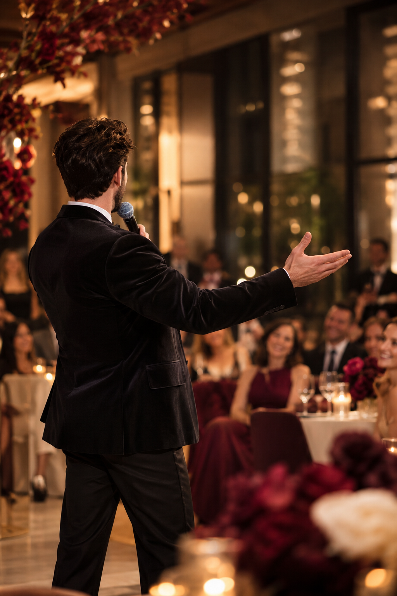
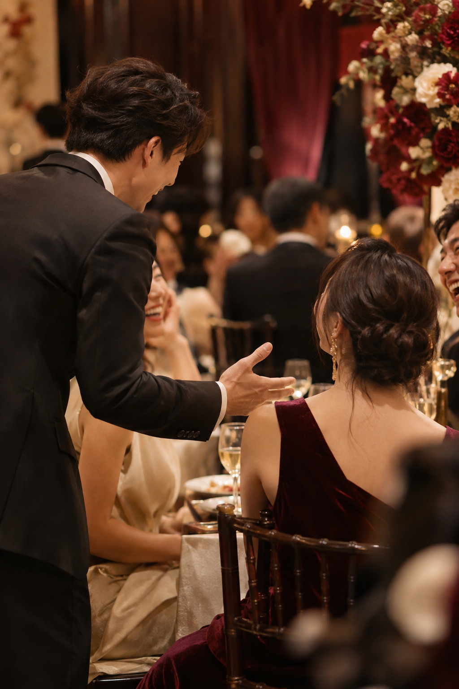
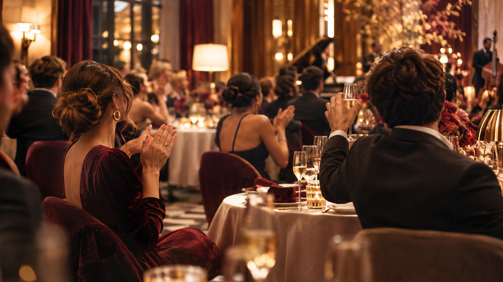

Свадьбы
Личная история пары, бережное внимание к близким и вечер без чужих сценариев.
Москва · Санкт-Петербург · Ваш город

О ведущем
Он создаёт пространство, в котором гостям легко общаться, смеяться и проживать важные моменты без неловкости и формальных пауз.
Обсудить ваш проект
Профессионально. Легко. По-человечески.
Несколько сотен событий — от камерных свадеб до конференций, открытий и официальных приёмов. Этот опыт помогает быть точным в моменте, не теряя лёгкости.
Форматы
В программе — акцент на смехе и живом юморе, который рождается из людей и самого события.
Личная история пары, бережное внимание к близким и вечер без чужих сценариев.
Лёгкая программа, которая объединяет команду и сохраняет характер компании.
Дни рождения, юбилеи и камерные вечера с точной интонацией и живым общением.
Конференции, открытия и официальные приёмы с собранной подачей и ясным таймингом.

Говорят клиенты
01«С первой встречи было понятно: ведущий слышит людей и умеет собрать вечер вокруг их истории.»
Клиент 01
02«Лёгкая подача, точный тайминг и атмосфера, в которой гостям действительно хочется быть вместе.»
Организатор события
03«Всё получилось живо, тепло и с юмором — без неловких конкурсов и чужих сценариев.»
Пара молодожёнов
Эмоции события
Здесь появятся фотографии с мероприятий — живые реакции гостей, улыбки и моменты, ради которых всё и происходит.
Смех в зале
Реакции гостей
Живые моменты
Как всё происходит
Вы рассказываете о событии, гостях и атмосфере, которую хочется создать.
Собираем структуру вечера, вопросы, важные истории и детали.
Сверяются тайминг, участники, подрядчики и всё, что остаётся за кадром.
Программа живёт вместе с залом: спокойно меняет темп и остаётся естественной.
Дата · город · формат
05 / 05Начнём с даты и короткого разговора.